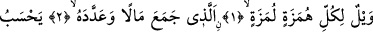
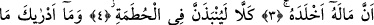
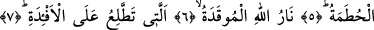
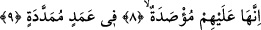

MALININ KENDİSİNİ
EBEDÎ KILACAĞINI
ZANNEDER
Bismillâhirrahmânirrahim
1. Arkadan çekiştirmeyi, yüze karşı eğlenmeyi âdet edinen herkesin vay hâline!
2. O ki, mal toplamış ve onu sayıp durmuştur.
3. (O), malının kendisini ebedî kılacağını zanneder.
4. Hayır! Andolsun ki o, Hutame’ye atılacaktır.
5. Hutame’nin ne olduğunu bilir misin?
6. Allah’ın, tutuşturulmuş ateşidir.
7. (Yandıkça) tırmanıp kalplerin ta üstüne çıkan (ateşidir.)
8-9. Onlar (bu ateşin içinde) uzatılmış sütunlara bağlanmışlar ve o vaziyette o
(ateş) üzerlerine kapatılmıştır.
“Vay!” anlamına gelen “veyl” kelimesi, Arapça dilbilgisi kuralları bakımından
mübtedâdır. Böyle nekre bir kelimenin mübtedâ olması, burada zikredilen fiili
yapanlara helâk olmaları veya şiddetli bir şerre dûçar olmaları için bedduâ anlamı
taşımasından dolayıdır. Haberi yâni yüklemi ise, “Arkadan çekiştiren ve yüze karşı
ayıplayan herkes” ifâdesidir.
Bu âyetteki, “el-hemz” kırmak demektir. “Lemz” ise ta‘n etmek; delmek, batırmak,
yaralamak demektir. Bu kelimeler, insanların şeref ve haysiyetlerine sataşmak ve onları
zedelemeye çalışmak mânâsında yaygınlaşmışlardır.
Kâmûs’un beyânına göre “el-hâmiz ve el-hümeze”, gammâz, kaş göz işâreti yaparak
insanlarla çokça dalga geçen, kötülük yapan, “lümeze” ise insanları çok ayıplayan
demektir. Veya lümeze insanı yüzüne karşı ayıplayan, hümeze ise arkasından ayıplayan
demektir.
“Hümeze” ve “lümeze” kelimelerinin kalıbı olan “fuale” bâbı, bir şeyi alışkanlık